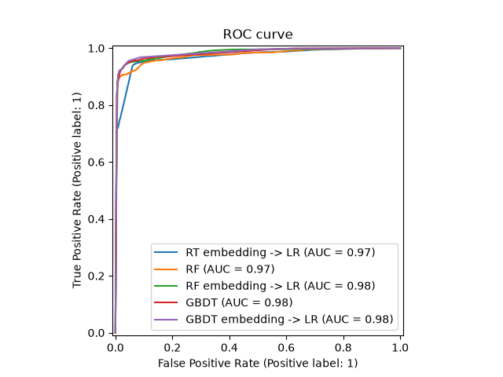
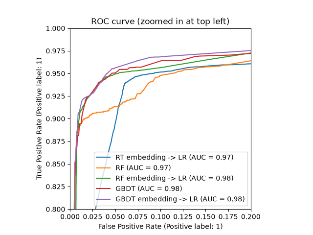
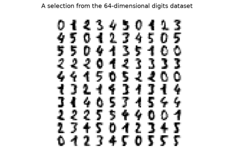

Note
Go to the end to download the full example code or to run this example in your browser via JupyterLite or Binder.
Feature transformations with ensembles of trees#
Transform your features into a higher dimensional, sparse space. Then train a linear model on these features.
First fit an ensemble of trees (totally random trees, a random forest, or gradient boosted trees) on the training set. Then each leaf of each tree in the ensemble is assigned a fixed arbitrary feature index in a new feature space. These leaf indices are then encoded in a one-hot fashion.
Each sample goes through the decisions of each tree of the ensemble and ends up in one leaf per tree. The sample is encoded by setting feature values for these leaves to 1 and the other feature values to 0.
The resulting transformer has then learned a supervised, sparse, high-dimensional categorical embedding of the data.
# Authors: The scikit-learn developers
# SPDX-License-Identifier: BSD-3-Clause
First, we will create a large dataset and split it into three sets:
a set to train the ensemble methods which are later used to as a feature engineering transformer;
a set to train the linear model;
a set to test the linear model.
It is important to split the data in such way to avoid overfitting by leaking data.
from sklearn.datasets import make_classification
from sklearn.model_selection import train_test_split
X, y = make_classification(n_samples=80_000, random_state=10)
X_full_train, X_test, y_full_train, y_test = train_test_split(
X, y, test_size=0.5, random_state=10
)
X_train_ensemble, X_train_linear, y_train_ensemble, y_train_linear = train_test_split(
X_full_train, y_full_train, test_size=0.5, random_state=10
)
For each of the ensemble methods, we will use 10 estimators and a maximum depth of 3 levels.
n_estimators = 10
max_depth = 3
First, we will start by training the random forest and gradient boosting on the separated training set
from sklearn.ensemble import GradientBoostingClassifier, RandomForestClassifier
random_forest = RandomForestClassifier(
n_estimators=n_estimators, max_depth=max_depth, random_state=10
)
random_forest.fit(X_train_ensemble, y_train_ensemble)
gradient_boosting = GradientBoostingClassifier(
n_estimators=n_estimators, max_depth=max_depth, random_state=10
)
_ = gradient_boosting.fit(X_train_ensemble, y_train_ensemble)
Notice that HistGradientBoostingClassifier is much
faster than GradientBoostingClassifier starting
with intermediate datasets (n_samples >= 10_000), which is not the case of
the present example.
The RandomTreesEmbedding is an unsupervised method
and thus does not required to be trained independently.
from sklearn.ensemble import RandomTreesEmbedding
random_tree_embedding = RandomTreesEmbedding(
n_estimators=n_estimators, max_depth=max_depth, random_state=0
)
Now, we will create three pipelines that will use the above embedding as a preprocessing stage.
The random trees embedding can be directly pipelined with the logistic regression because it is a standard scikit-learn transformer.
from sklearn.linear_model import LogisticRegression
from sklearn.pipeline import make_pipeline
rt_model = make_pipeline(random_tree_embedding, LogisticRegression(max_iter=1000))
rt_model.fit(X_train_linear, y_train_linear)
Pipeline(steps=[('randomtreesembedding',
RandomTreesEmbedding(max_depth=3, n_estimators=10,
random_state=0)),
('logisticregression', LogisticRegression(max_iter=1000))])In a Jupyter environment, please rerun this cell to show the HTML representation or trust the notebook. On GitHub, the HTML representation is unable to render, please try loading this page with nbviewer.org.
Parameters
Fitted attributes
Parameters
Fitted attributes
75 features
| randomtreesembedding_0_3 |
| randomtreesembedding_0_4 |
| randomtreesembedding_0_6 |
| randomtreesembedding_0_7 |
| randomtreesembedding_0_10 |
| randomtreesembedding_0_11 |
| randomtreesembedding_0_13 |
| randomtreesembedding_0_14 |
| randomtreesembedding_1_3 |
| randomtreesembedding_1_4 |
| randomtreesembedding_1_6 |
| randomtreesembedding_1_7 |
| randomtreesembedding_1_10 |
| randomtreesembedding_1_11 |
| randomtreesembedding_1_13 |
| randomtreesembedding_1_14 |
| randomtreesembedding_2_3 |
| randomtreesembedding_2_4 |
| randomtreesembedding_2_6 |
| randomtreesembedding_2_7 |
| randomtreesembedding_2_10 |
| randomtreesembedding_2_11 |
| randomtreesembedding_2_13 |
| randomtreesembedding_2_14 |
| randomtreesembedding_3_3 |
| randomtreesembedding_3_4 |
| randomtreesembedding_3_6 |
| randomtreesembedding_3_7 |
| randomtreesembedding_3_10 |
| randomtreesembedding_3_11 |
| randomtreesembedding_3_13 |
| randomtreesembedding_3_14 |
| randomtreesembedding_4_3 |
| randomtreesembedding_4_4 |
| randomtreesembedding_4_6 |
| randomtreesembedding_4_7 |
| randomtreesembedding_4_10 |
| randomtreesembedding_4_11 |
| randomtreesembedding_4_13 |
| randomtreesembedding_4_14 |
| randomtreesembedding_5_3 |
| randomtreesembedding_5_4 |
| randomtreesembedding_5_6 |
| randomtreesembedding_5_7 |
| randomtreesembedding_5_10 |
| randomtreesembedding_5_11 |
| randomtreesembedding_5_12 |
| randomtreesembedding_6_3 |
| randomtreesembedding_6_4 |
| randomtreesembedding_6_6 |
| randomtreesembedding_6_7 |
| randomtreesembedding_6_9 |
| randomtreesembedding_6_11 |
| randomtreesembedding_6_12 |
| randomtreesembedding_7_3 |
| randomtreesembedding_7_4 |
| randomtreesembedding_7_6 |
| randomtreesembedding_7_7 |
| randomtreesembedding_7_10 |
| randomtreesembedding_7_11 |
| randomtreesembedding_7_13 |
| randomtreesembedding_7_14 |
| randomtreesembedding_8_1 |
| randomtreesembedding_8_4 |
| randomtreesembedding_8_5 |
| randomtreesembedding_8_7 |
| randomtreesembedding_8_8 |
| randomtreesembedding_9_3 |
| randomtreesembedding_9_4 |
| randomtreesembedding_9_6 |
| randomtreesembedding_9_7 |
| randomtreesembedding_9_10 |
| randomtreesembedding_9_11 |
| randomtreesembedding_9_13 |
| randomtreesembedding_9_14 |
Parameters
Fitted attributes
Then, we can pipeline random forest or gradient boosting with a logistic
regression. However, the feature transformation will happen by calling the
method apply. The pipeline in scikit-learn expects a call to transform.
Therefore, we wrapped the call to apply within a FunctionTransformer.
from sklearn.preprocessing import FunctionTransformer, OneHotEncoder
def rf_apply(X, model):
return model.apply(X)
rf_leaves_yielder = FunctionTransformer(rf_apply, kw_args={"model": random_forest})
rf_model = make_pipeline(
rf_leaves_yielder,
OneHotEncoder(handle_unknown="ignore"),
LogisticRegression(max_iter=1000),
)
rf_model.fit(X_train_linear, y_train_linear)
Pipeline(steps=[('functiontransformer',
FunctionTransformer(func=<function rf_apply at 0x77531118aae0>,
kw_args={'model': RandomForestClassifier(max_depth=3,
n_estimators=10,
random_state=10)})),
('onehotencoder', OneHotEncoder(handle_unknown='ignore')),
('logisticregression', LogisticRegression(max_iter=1000))])In a Jupyter environment, please rerun this cell to show the HTML representation or trust the notebook. On GitHub, the HTML representation is unable to render, please try loading this page with nbviewer.org.
Parameters
Fitted attributes
Parameters
Fitted attributes
| Name | Type | Value |
|---|---|---|
|
n_features_in_
n_features_in_: int Number of features seen during :term:`fit`. .. versionadded:: 0.24 |
int | 20 |
Parameters
Fitted attributes
79 features
| x0_3 |
| x0_4 |
| x0_6 |
| x0_7 |
| x0_10 |
| x0_11 |
| x0_13 |
| x0_14 |
| x1_3 |
| x1_4 |
| x1_6 |
| x1_7 |
| x1_10 |
| x1_11 |
| x1_13 |
| x1_14 |
| x2_3 |
| x2_4 |
| x2_6 |
| x2_7 |
| x2_10 |
| x2_11 |
| x2_13 |
| x2_14 |
| x3_3 |
| x3_4 |
| x3_6 |
| x3_7 |
| x3_10 |
| x3_11 |
| x3_13 |
| x3_14 |
| x4_3 |
| x4_4 |
| x4_6 |
| x4_7 |
| x4_10 |
| x4_11 |
| x4_13 |
| x4_14 |
| x5_3 |
| x5_4 |
| x5_6 |
| x5_7 |
| x5_10 |
| x5_11 |
| x5_13 |
| x5_14 |
| x6_3 |
| x6_4 |
| x6_6 |
| x6_7 |
| x6_10 |
| x6_11 |
| x6_13 |
| x6_14 |
| x7_3 |
| x7_4 |
| x7_6 |
| x7_7 |
| x7_10 |
| x7_11 |
| x7_13 |
| x7_14 |
| x8_3 |
| x8_4 |
| x8_6 |
| x8_7 |
| x8_10 |
| x8_11 |
| x8_13 |
| x8_14 |
| x9_3 |
| x9_4 |
| x9_7 |
| x9_10 |
| x9_11 |
| x9_13 |
| x9_14 |
Parameters
Fitted attributes
def gbdt_apply(X, model):
return model.apply(X)[:, :, 0]
gbdt_leaves_yielder = FunctionTransformer(
gbdt_apply, kw_args={"model": gradient_boosting}
)
gbdt_model = make_pipeline(
gbdt_leaves_yielder,
OneHotEncoder(handle_unknown="ignore"),
LogisticRegression(max_iter=1000),
)
gbdt_model.fit(X_train_linear, y_train_linear)
Pipeline(steps=[('functiontransformer',
FunctionTransformer(func=<function gbdt_apply at 0x7752ea0af060>,
kw_args={'model': GradientBoostingClassifier(n_estimators=10,
random_state=10)})),
('onehotencoder', OneHotEncoder(handle_unknown='ignore')),
('logisticregression', LogisticRegression(max_iter=1000))])In a Jupyter environment, please rerun this cell to show the HTML representation or trust the notebook. On GitHub, the HTML representation is unable to render, please try loading this page with nbviewer.org.
Parameters
Fitted attributes
Parameters
Fitted attributes
| Name | Type | Value |
|---|---|---|
|
n_features_in_
n_features_in_: int Number of features seen during :term:`fit`. .. versionadded:: 0.24 |
int | 20 |
Parameters
Fitted attributes
76 features
| x0_4.0 |
| x0_6.0 |
| x0_7.0 |
| x0_10.0 |
| x0_11.0 |
| x0_13.0 |
| x0_14.0 |
| x1_4.0 |
| x1_6.0 |
| x1_7.0 |
| x1_10.0 |
| x1_11.0 |
| x1_13.0 |
| x1_14.0 |
| x2_4.0 |
| x2_6.0 |
| x2_7.0 |
| x2_10.0 |
| x2_11.0 |
| x2_13.0 |
| x2_14.0 |
| x3_4.0 |
| x3_6.0 |
| x3_7.0 |
| x3_10.0 |
| x3_11.0 |
| x3_13.0 |
| x3_14.0 |
| x4_3.0 |
| x4_4.0 |
| x4_6.0 |
| x4_7.0 |
| x4_10.0 |
| x4_11.0 |
| x4_13.0 |
| x4_14.0 |
| x5_3.0 |
| x5_4.0 |
| x5_6.0 |
| x5_7.0 |
| x5_10.0 |
| x5_11.0 |
| x5_13.0 |
| x5_14.0 |
| x6_3.0 |
| x6_4.0 |
| x6_6.0 |
| x6_7.0 |
| x6_10.0 |
| x6_11.0 |
| x6_13.0 |
| x6_14.0 |
| x7_3.0 |
| x7_4.0 |
| x7_6.0 |
| x7_7.0 |
| x7_10.0 |
| x7_11.0 |
| x7_13.0 |
| x7_14.0 |
| x8_3.0 |
| x8_4.0 |
| x8_6.0 |
| x8_7.0 |
| x8_10.0 |
| x8_11.0 |
| x8_13.0 |
| x8_14.0 |
| x9_3.0 |
| x9_4.0 |
| x9_6.0 |
| x9_7.0 |
| x9_10.0 |
| x9_11.0 |
| x9_13.0 |
| x9_14.0 |
Parameters
Fitted attributes
We can finally show the different ROC curves for all the models.
import matplotlib.pyplot as plt
from sklearn.metrics import RocCurveDisplay
_, ax = plt.subplots()
models = [
("RT embedding -> LR", rt_model),
("RF", random_forest),
("RF embedding -> LR", rf_model),
("GBDT", gradient_boosting),
("GBDT embedding -> LR", gbdt_model),
]
model_displays = {}
for name, pipeline in models:
model_displays[name] = RocCurveDisplay.from_estimator(
pipeline, X_test, y_test, ax=ax, name=name
)
_ = ax.set_title("ROC curve")

_, ax = plt.subplots()
for name, pipeline in models:
model_displays[name].plot(ax=ax)
ax.set_xlim(0, 0.2)
ax.set_ylim(0.8, 1)
_ = ax.set_title("ROC curve (zoomed in at top left)")

Total running time of the script: (0 minutes 2.316 seconds)
Related examples

Manifold learning on handwritten digits: Locally Linear Embedding, Isomap…

Comparing Random Forests and Histogram Gradient Boosting models